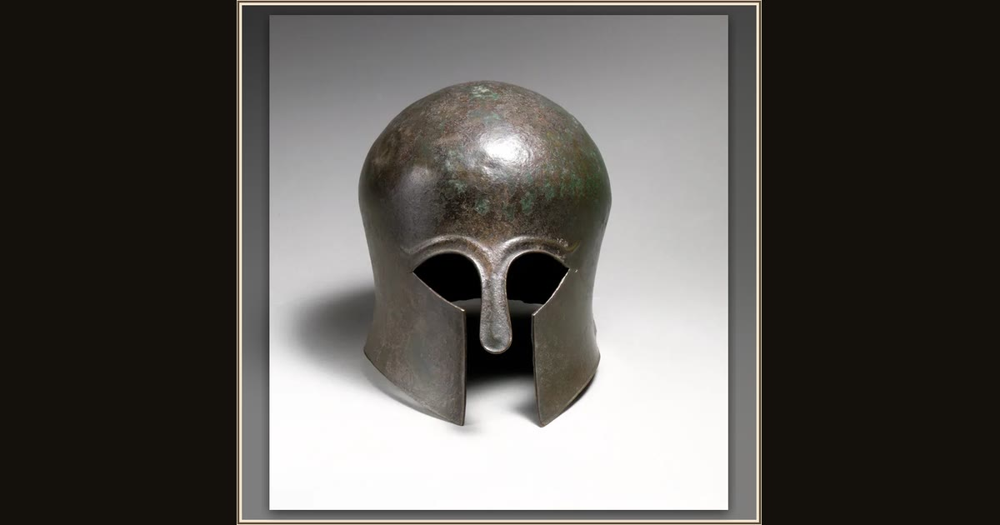

Bronze helmet of the Corinthian type
Greek, Archaic · 6th century BCE · met
A sixth-century bronze Greek helmet of Corinthian type. Thucydides later describes the Lacedaemonians on Sphacteria being offered the chance to surrender themselves and their arms (4.37.2) Explore its place in Thucydides's History of the Peloponnesian War, Boo